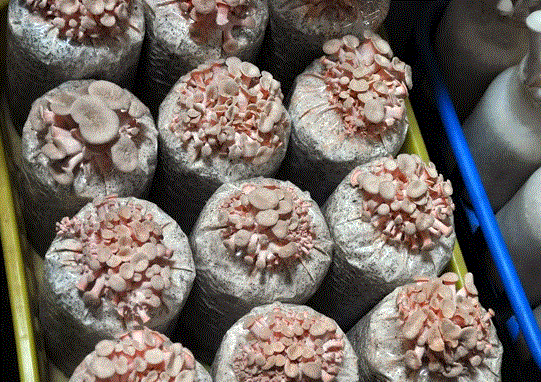

現在位置〉首頁〉菇菇的家．無塵室導覽
流程介紹:
0000透過導覽人員的解說，讓大致上可以瞭解香菇栽培的過程、香菇的種類、如何保存、運送等等，偶然導覽人員也會問比較深入的問題
為什麼要戴防塵套呢？其實理由很簡單，香菇怕灰塵，灰塵上也帶有無數的細菌，會使用染塵的香菇無法生長，甚至爛光光呢！
| 穿上帽套 | 套上鞋套 | 酒精消毒 | 到吹氣室吹掉身上灰塵 |
0000經過吹氣室，來到了工廠庫房的走道，面對著這一面牆，導覽人員開始解說香菇的品種，以及在什麼生長環境下培育出不同品種的香菇，舉凡粉紅玫瑰菇、杏鮑菇、黑木耳、黃金菇、白精靈菇、銀耳、靈芝、珍珠菇、日本蠔菇、杏香菇等等，特別的是每一種香菇皆含有不同的營養成份，食用後對人體有不同的幫助。
0000透過導覽人員的解說與介紹，並讓我們仔細觀察各品種香菇的外形與顏色，隨後便讓大家進到庫房裡頭參觀正在培育的香菇，不過由於裡頭是禁止攝影的，因此簡單帶過；香菇是在低溫下培育
| 準備進到庫房參觀香菇培育的過程，進到裡面是禁止攝影 |
菇菇的健康
銀耳
又名白木耳、形似牡丹，色白如銀、肉質滑嫩、風味獨特，被譽為是大自然賜給民間的美食，在歷史上曾被列為宮庭貢品，傳統出口名特產品之一。
| 我有以銀耳為原料開發的保養相關產品 購買連結 |
粉紅玻瑰菇
子實體一般中等大，菌蓋初期貝殼形或扇形，邊緣內卷，後伸展邊緣呈波狀，表面有細小絨毛至近光滑，幼時粉紅色，鮭肉色或後變淺土色至鮭白色。
|  |